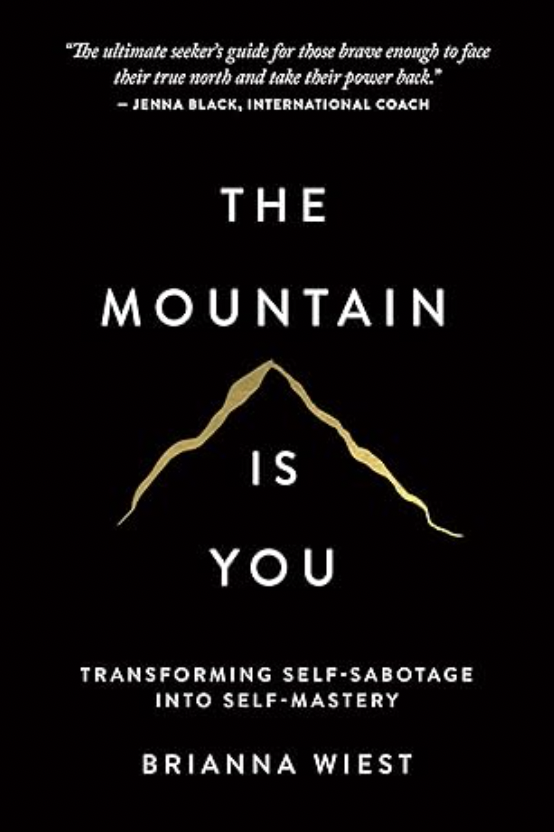

| Title |
Image |
Rating |
Description |
Amazon Link |
| The Mountain Is You |
 |
4.8/5 |
Learn about why your everyday habits are holding you back from living the life you have always wanted. This book is not just insperational but it also is a toolbox of helpful tips to improve your life. |
Purchase Here |
| Good Vibes, Good Life |
|
4.7/5 |
This is a life changing book about self love. Explore why self love is the most imporatnt form of love and why it should always be your frist priority if life. |
Purchase Here |
| Self-Love Workbook for Women |
|
4.5/5 |
This book is truley empowering for any women out there, it is all about stopping trying to change yourself and become what others want you to be. Insted yo should own who you are. |
Purchase Here |
| How to Do the Work |
|
4/5 |
Throughout this book you get to learn all about how your past made you who you are. This book can really be the wakeup call you need. |
Purchase Here |
| Think Like a Monk |
|
4/5 |
This book will teach you about how kindness is the key to happiness, how to find your purpose and most importantly how to be happy with who you are and overcome negativity. |
Purchase Here |
The Art of Letting GO |
 |
3.5/5 |
This book is all about understanding how events effect you then how to let them go quickly. Letting go is the key to freedom and the sooner we learn this skill the faster we can feel free of our past. |
Purchase Here |